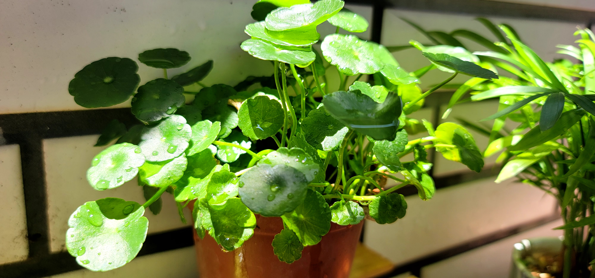
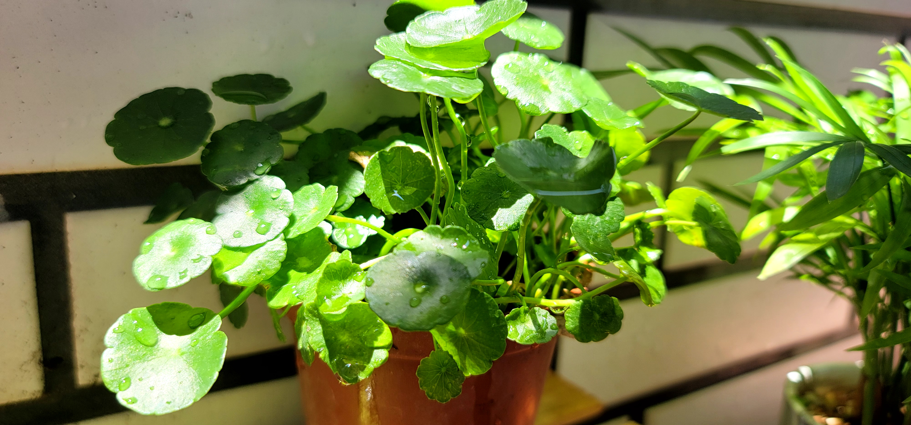
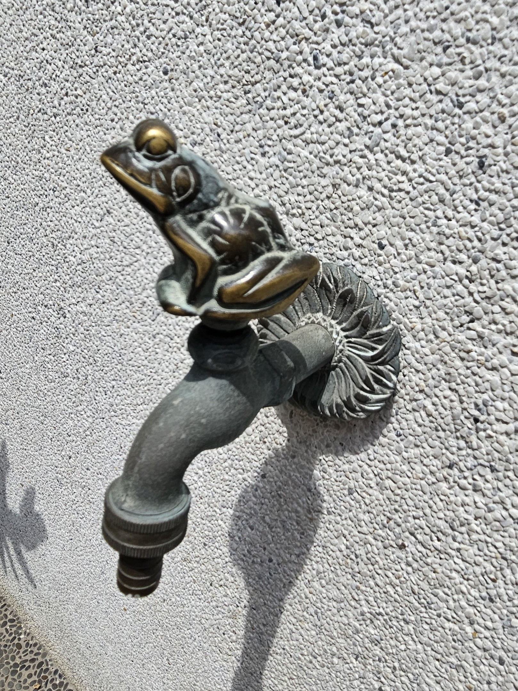
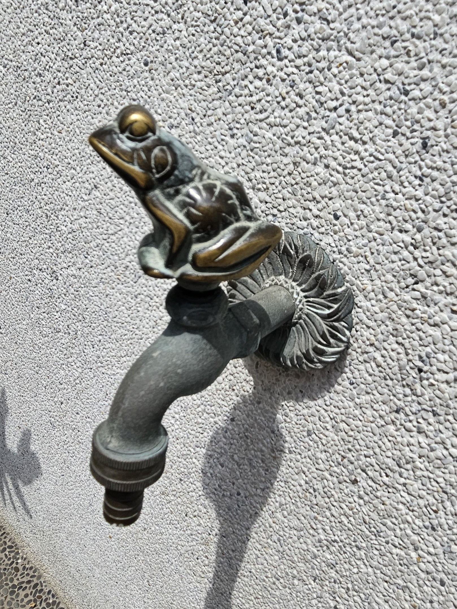
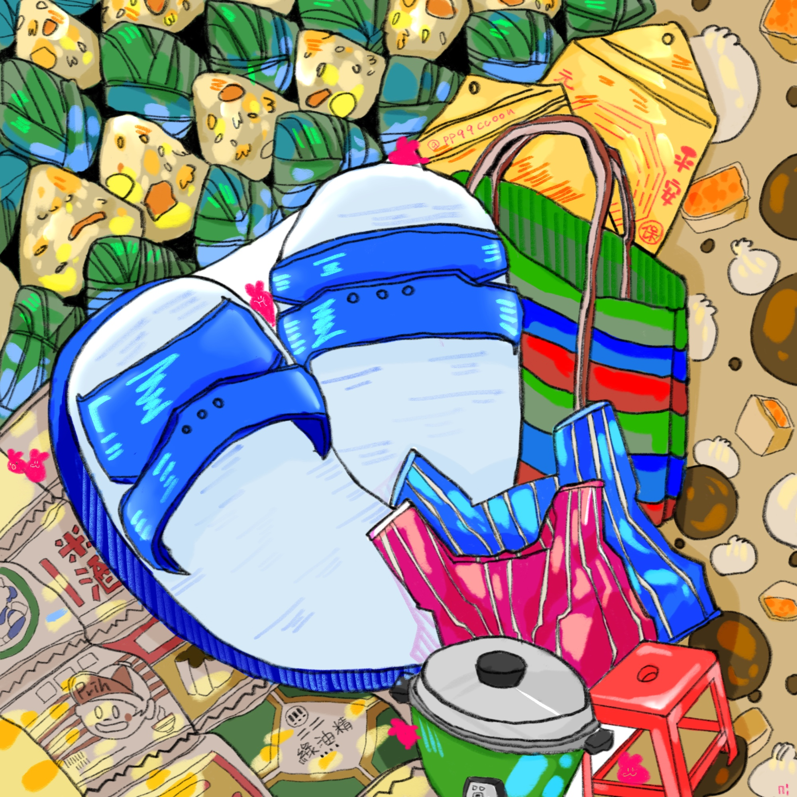
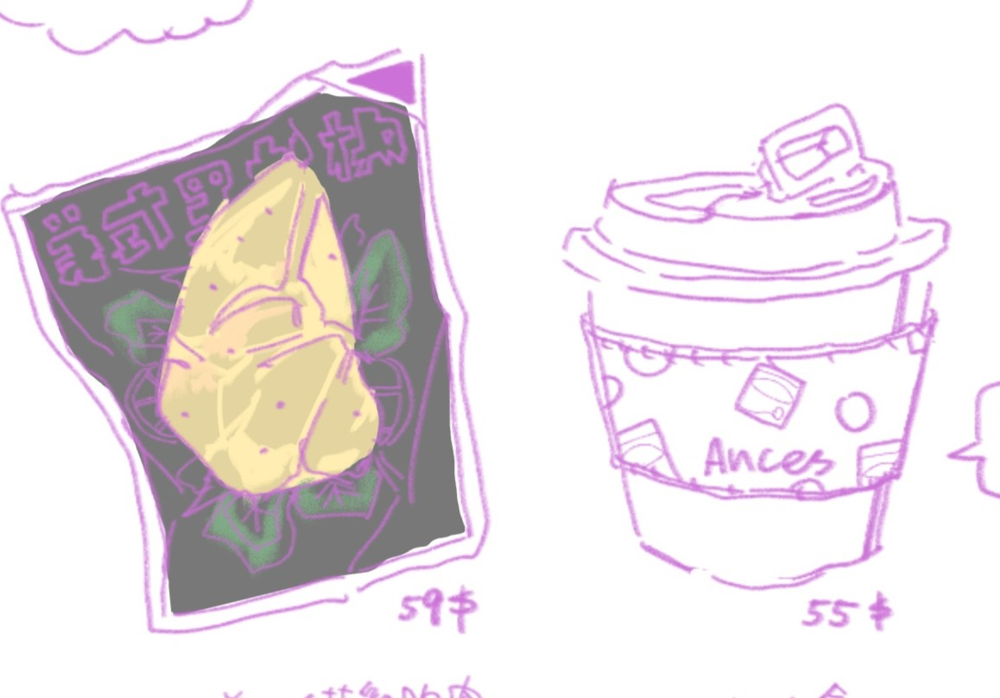
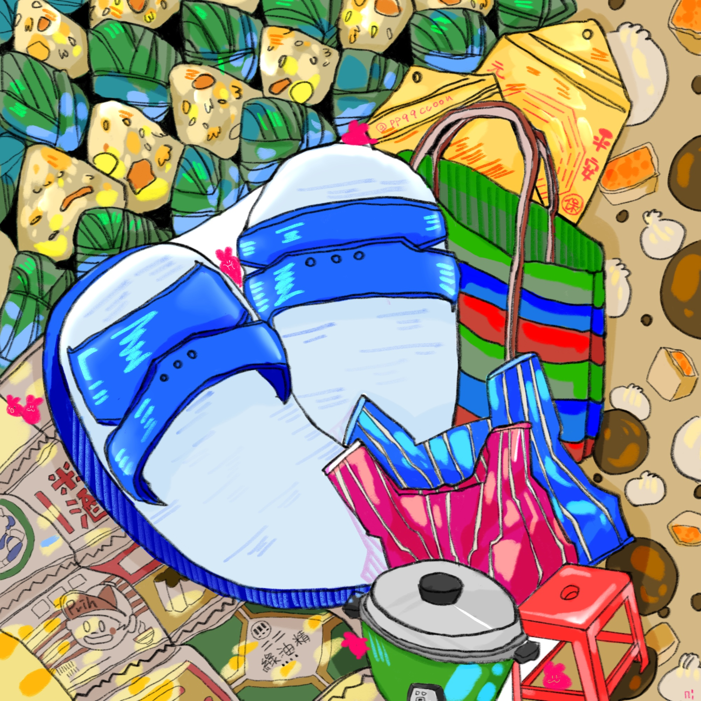
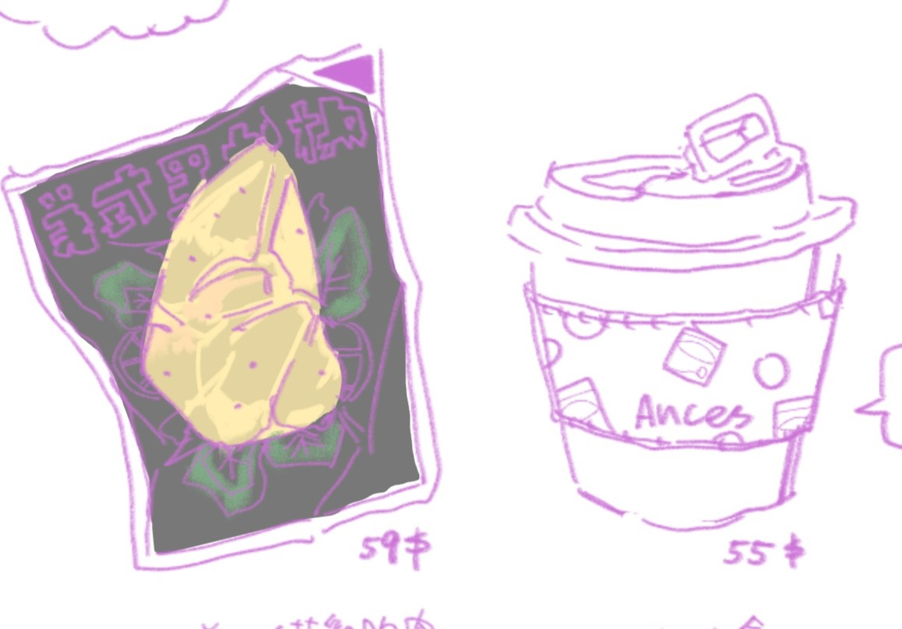

/About Me/
" 貝戈戈實踐家 "
在正常和不正常見反覆橫JUMP，
對創作充滿熱情，也喜歡將日常感受轉化為作品。
 


 


 



我的技能與成就
| 稱號 | 說明 | GET |
|---|---|---|
| 內分泌破壞者 | 熬夜偷天 | 乖乖守衛技能+1 |
| 完美主義者 | LV.2/1 防護 | 精神防禦-150EXP |
| 背德資料庫 | 重度關係性中毒 | 收藏所有不能見光的愛 |
| 史萊哲林高階巫師 | RAZE指數 | ★★★★★ |
聯絡我
魔法樹洞: lihaoling@example.com
失靈專線: 0912-345-678
出沒Cyberspace: @lihaoling4980
營業時間:
P.M.15:00 - A.M.08:00

注意事項
習性：喜歡安靜觀察環境
人是好的，嘴是貝戈戈
厭惡無禮之人，驅之別院